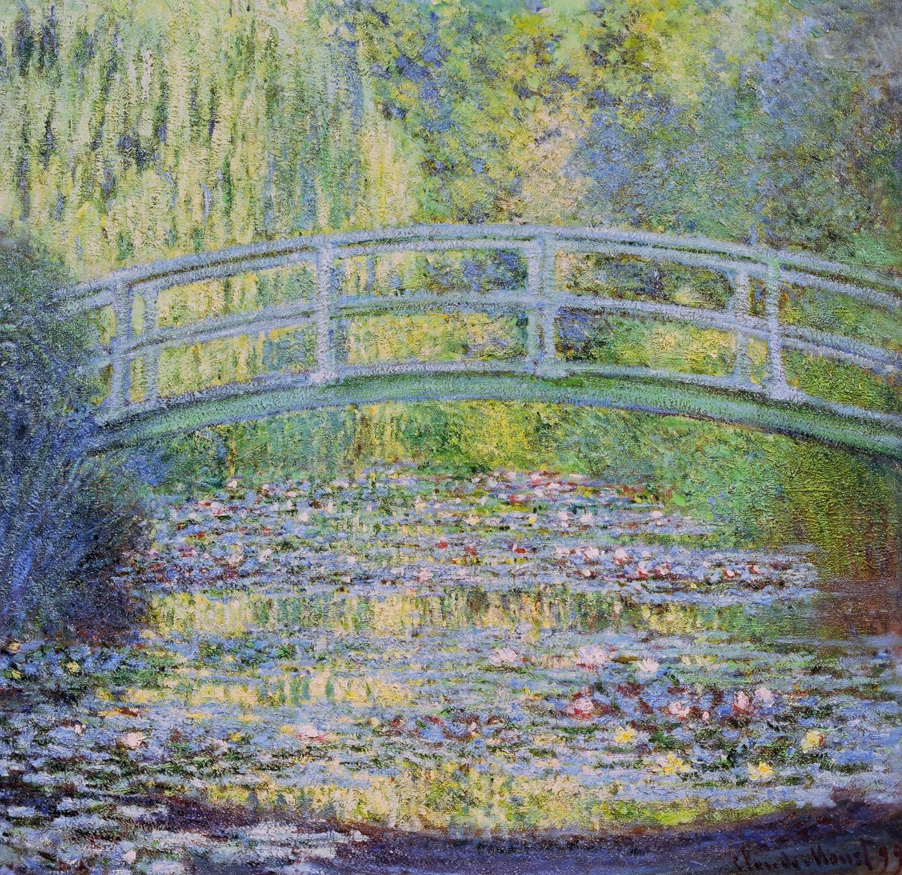

Oscar-Claude Monet was a French painter and founder of impressionism painting who is seen as a key precursor to modernism, especially in his attempts to paint nature as he perceived it
Claude Monet was a key figure in the Impressionist movement that transformed French painting in the second half of the nineteenth century. Throughout his long career, Monet consistently depicted the landscape and leisure activities of Paris and its environs as well as the Normandy coast. He led the way to twentieth-century modernism by developing a unique style that strove to capture on canvas the very act of perceiving nature.
Raised in Normandy, Monet was introduced to plein-air painting by Eugène Boudin (2003.20.2), known for paintings of the resorts that dotted the region’s Channel coast, and subsequently studied informally with the Dutch landscapist Johan Jongkind (1819–1891). When he was twenty-two, Monet joined the Paris studio of the academic history painter Charles Gleyre. His classmates included Auguste Renoir, Frédéric Bazille, and other future Impressionists. Monet enjoyed limited success in these early years, with a handful of landscapes, seascapes, and portraits accepted for exhibition at the annual Salons of the 1860s. Yet rejection of many of his more ambitious works, notably the large-scale Women in the Garden (1866; Musée d’Orsay, Paris), inspired Monet to join with Edgar Degas, Édouard Manet, Camille Pissarro, Renoir, and others in establishing an independent exhibition in 1874. Impression, Sunrise (1873; Musée Marmottan Monet, Paris), one of Monet’s contributions to this exhibition, drew particular scorn for the unfinished appearance of its loose handling and indistinct forms. Yet the artists saw the criticism as a badge of honor, and subsequently called themselves “Impressionists” after the painting’s title, even though the name was first used derisively.
Monet found subjects in his immediate surroundings, as he painted the people and places he knew best. His first wife, Camille (2002.62.1), and his second wife, Alice, frequently served as models. His landscapes chart journeys around the north of France (31.67.11) and to London, where he escaped the Franco-Prussian War of 1870–71. Returning to France, Monet moved first to Argenteuil, just fifteen minutes from Paris by train, then west to Vétheuil, Poissy, and finally to the more rural Giverny in 1883. His homes and gardens became gathering places for friends, including Manet and Renoir, who often painted alongside their host (1976.201.14). Yet Monet’s paintings cast a surprisingly objective eye on these scenes, which include few signs of domestic relations.
Following in the path of the Barbizon painters, who had set up their easels in the Fontainebleau Forest (64.210) earlier in the century, Monet adopted and extended their commitment to close observation and naturalistic representation. Whereas the Barbizon artists painted only preliminary sketches en plein air, Monet often worked directly on large-scale canvases out of doors, then reworked and completed them in his studio. His quest to capture nature more accurately also prompted him to reject European conventions governing composition, color, and perspective. Influenced by Japanese woodblock prints, Monet’s asymmetrical arrangements of forms emphasized their two-dimensional surfaces by eliminating linear perspective and abandoning three-dimensional modeling. He brought a vibrant brightness to his works by using unmediated colors, adding a range of tones to his shadows, and preparing canvases with light-colored primers instead of the dark grounds used in traditional landscape paintings.
 Water Lilies and Japanese Bridge